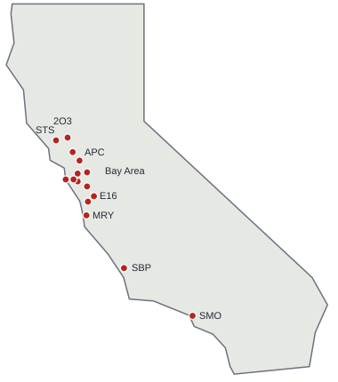

Fifteen DART airports in California

A red dot marks a DART airport. Twelve of them cluster around the Bay; see the detail below.
Bay Area detail
Schematic. Airport positions are approximate and the drawing is not to scale; do not use it for navigation.
DARTs by region
15 DARTs · 240 members · 96 aircraft · 11 counties with a signed agreement
North Bay (3)
- 2O3 Angwin Angwin
- APC Napa Napa
- STS Santa Rosa Santa Rosa
East Bay (3)
- CCR Contra Costa Concord
- HWD Hayward Hayward
- LVK Livermore Livermore
Peninsula (3)
- HAF Half Moon Bay Half Moon Bay
- PAO Palo Alto Palo Alto
- SQL San Carlos San Carlos
South Bay (2)
- RHV Reid-Hillview San Jose
- E16 San Martin San Martin
Central Coast (3)
- SBP Central Coast San Luis Obispo
- MRY Monterey Monterey
- WVI Watsonville Watsonville
Southern California (1)
- SMO Santa Monica Santa Monica
Request air support
(555) 010-2201 Call the duty coordinator at any hour. Give the agency name, the mission, the departure and arrival airports and the deadline.
County OES, hospitals, tribal governments and mutual-aid partners request support through the duty coordinator.
Already a member?
Sign in to the member portal to update your profile, check your medical and insurance dates, or renew.
Take part
| Fly | Private pilot certificate or higher, current medical or BasicMed, access to an aircraft. Flight time counts toward currency. Join |
|---|---|
| Crew | Ground crew: no pilot certificate needed. Loading, radio, logistics, airport liaison. Join |
| Give | Friend of CalDART: a donation of any amount, no membership. Annual membership is $45 a year and life membership is $650. Donate |